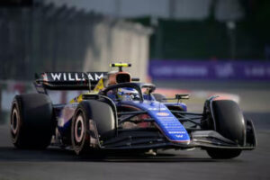
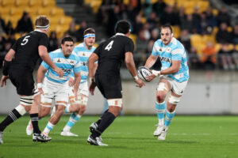

FRANCO COLAPINTO, ORGULLO NACIONAL
Franco Colapinto hizo historia al debutar en la Fórmula 1 con el equipo Williams, convirtiéndose en el primer piloto argentino en la categoría desde 2001. A los 21 años, reemplazó a Logan Sargeant tras un accidente en las prácticas del Gran Premio de Países Bajos y competirá en el resto de la temporada, comenzando en el Gran Premio de Italia en Monza. Franco causó una emoción inmensa en los argentinos, haciendo que muchos de ellos viajen para vivir esta mágica sensación.
ELIMINATORIAS 2026
Para la fecha FIFA de noviembre 2024, la selección de fútbol de Argentina jugará dos partidos clave en las eliminatorias para el Mundial 2026. El primero será contra Paraguay el jueves 14 de noviembre en Buenos Aires, a las 20:00 horas. Luego, enfrentarán a Perú el martes 17, a las 23:00 horas, en el Estadio Nacional de Lima. Además, habrá un enfrentamiento muy esperado contra Brasil el domingo 21 de noviembre en el Maracaná, a las 21:30 horas.

LOS PUMAS
Argentina continúa con su buen desempeño en el rugby, destacando la victoria sobre Nueva Zelanda en el Rugby Championship 2024. Este triunfo fue histórico para Los Pumas, demostrando su evolución constante a nivel mundial.
¿Perdida en la selección?
La selección argentina de básquet sufrió una gran pérdida con la lesión de Nicolás Laprovittola. El base se rompió el ligamento y sufrió una lesión en el menisco de la rodilla derecha durante un partido.